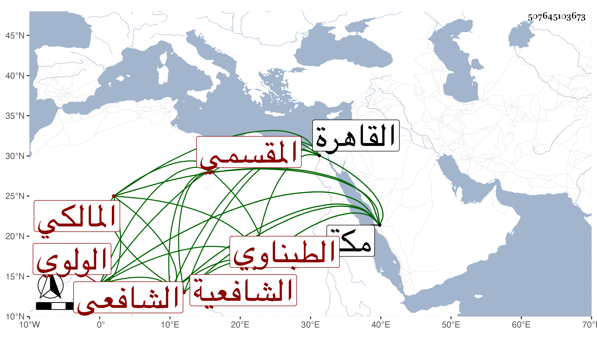

0902Sakhawi.DawLamic.ITO20230111-ara1.EIS1600.507645103673
Biography ID: 507645103673
ابن قاسم الولوي محمد بن قاسم بن عبد الله بن عبد الرحمن الشافعي وأخوه أبو المكارم محمد المالكي وابنه الشرف محمد بن أبي المكارم وابنه الزين قاسم وابنه . وابن قاسم أحد الشافعية هو الشمس محمد بن قاسم بن علي المقسمي وابن قاسم السكري واسمه البدر محمد بن قاسم خير ويعرف أبوه بابن البارد وابن قاسم الطبناوي . وابن قاسم الحريري بالحسينية ممن اشتغل عند الزين عبد الرحيم الأبناسي وحج صحبته وكذا أخذ عن غيره قليلا وهو شاب ظريف فطن فهم اشتغل بالعيال عن الاشتغال وربما قرأ على أحمد بن النجار الحنبلي وجاور بمكة في سنة تسع وتسعين وقرأ علي بل أحضر معه كرسيا وقرأ عليه في المسجد الحرام ابن قاسم المدني محمد بن عبد العزيز بن أحمد بن قاسم وأخوه شرف . وابن قاسم واعظ مكة وغيرها الشمس محمد بن وابن قاسم الغزي نزيل القاهرة ويعرف بابن الغرابيلي وهو الشمس محمد .
